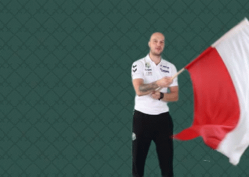
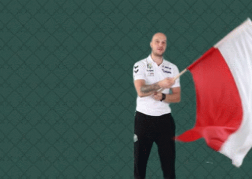

Narodowe Święto Niepodległości
11 Listopada
11 listopada Polska świętuje 105. rocznicę odzyskania niepodległości. 11 listopada 1918 roku, po 123 latach zaborów, odrodziło się niepodległe państwo polskie. Dzień ten obchodzony jest jako Narodowe Święto Niepodległości od 1989 roku.
"Rota" Po odzyskaniu przez Polskę niepodległości była konkurentem Mazurka Dąbrowskiego do określenia mianem hymnu narodowego. Utożsamiając się z rodakami, kobieta przyłączyła się do buntu Polaków przeciwko nasilającej polityce germanizacyjnej. Rota była więc „pieśnią protestu” skierowaną przeciwko zaborcom
Zapraszam do wspólnego słuchania tej jakże pięknej pieśni!
 
